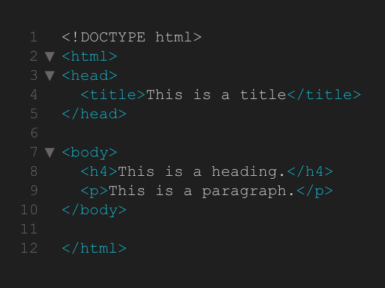

Sesión 2
Interfaces y herramientas para crear sitios web y páginas web.

Como hemos aprendido, hay varios códigos, elementos, listas, vínculos y atributos que podemos usar para nuestra bitácora. Por ejemplo, el tipo de lista "ul lista desordenada" "ol lista ordenada", el head "head", el inicio del html "html", el texto usando el p, el link usando li, y la imagen usando img src="". Después de esto, cada uno empezó a progresar con su propia página.
